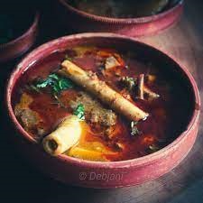
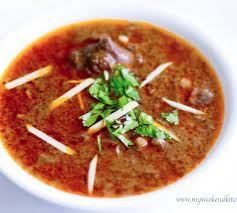

MUTTON NIHARI
Nihari is a deliciously smooth flour based mutton stew of slow cooked in a myriad of spices.
Reserved for royal kitchens in the past, nihari masala is a delicacy, now found in many restaurants
Lets put some inlight on the ingridents:

- 1 kg mutton , preferably shank portion (cut into 8-10 pieces)
- 4 tbsp Ghee/ Clarified butter
- 2 medium onions , finely sliced
- 1 tsp ginger paste
- 1 tsp garlic paste
- Salt to taste
- 2 tsp coriander powder
- 1/2 tsp turmeric powder
- 3 tbsp wheat flour
- 3 tbsp nihari masala

Below is the method
- In a pan heat up the oil on medium heat until hot
- Add the ginger paste and garlic paste then sauté for a few minutes on medium heat
- Add the lamb or mutton and cook until the colour changes
- While the lamb/mutton is cooking, grind the fennel seeds, cumin seeds, coriander seeds, black peppercorns until its powder
- Add the nihari masala powder, chilli powder, turmeric powder, and salt then cook the spices for 5 minutes
- Add the water and cook for a further 2 hours on low heat until the meat is tender
- In a separate bowl, mix the wheat flour and 100ml of water to form a smooth paste
this flour mixture acts as a thickening agent, if you want to thicken it more then add more flour
- Add the flour mixture into the pan then cover with a lid and cook for 30 minutes on a low heat
- In another pan, heat up the olive oil on medium heat until hot
- Add the sliced onions and fry the sliced onions until browned and caramelised
- Add the browned onions to the lamb along with the chopped coriander, julienned ginger, and finely diced chillie
- Serve with homemade naan and enjoy!